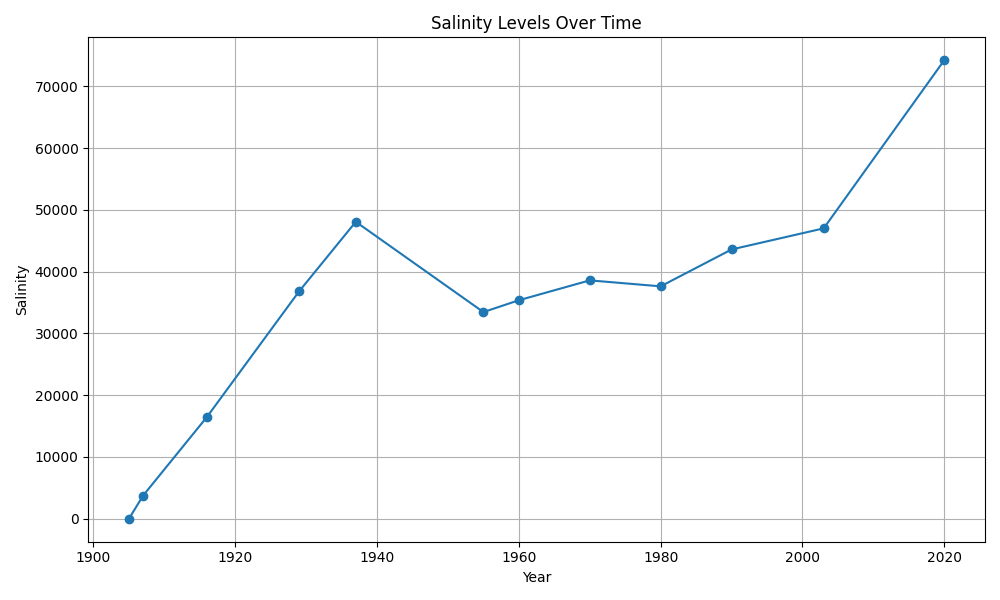
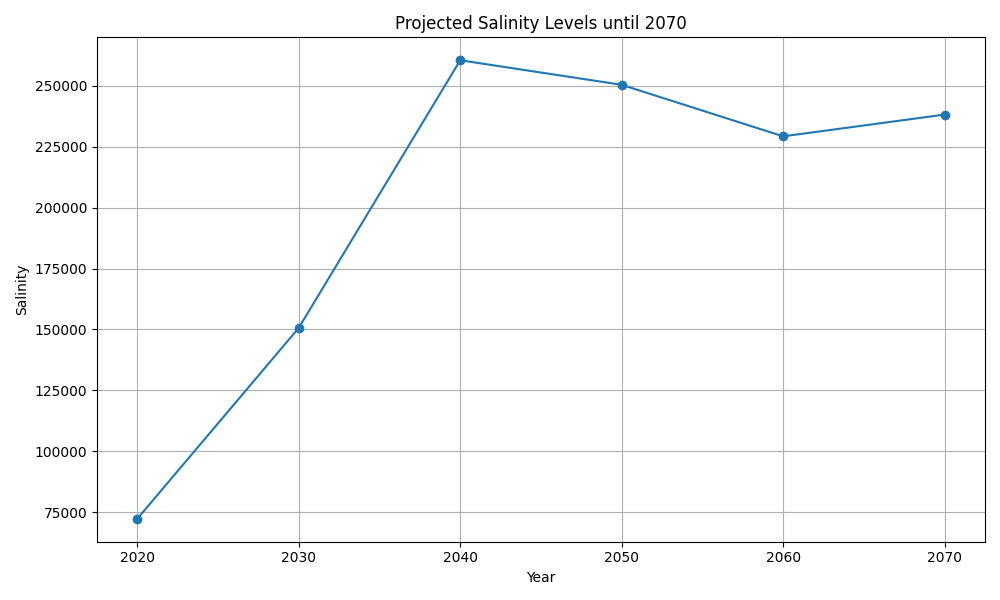
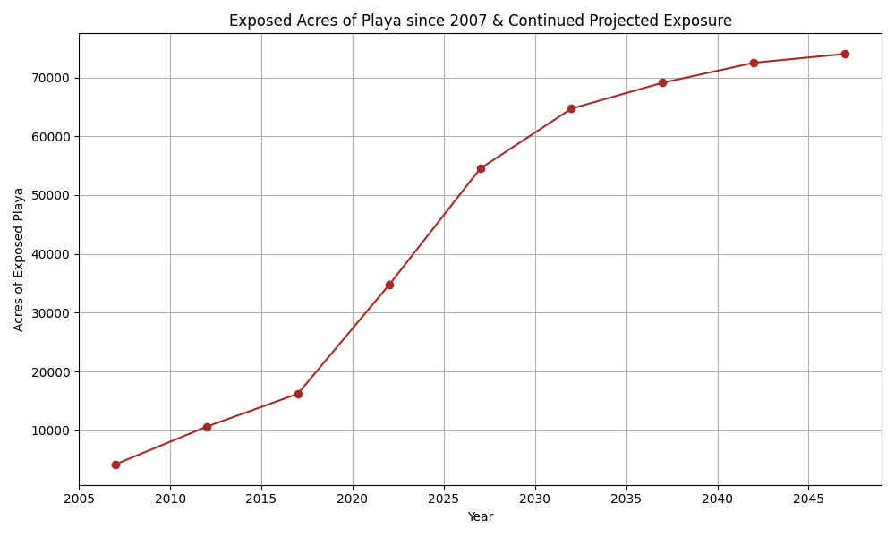

Salinity Level Analysis
The first set of data explores the water salinity levels over the course of its creation, all the way up to 2020.
Future Salinity level projections.
The second visual analysis shows the extent the salinity levels could reach in the future based on projections. This will impact the existing, remaining life in the Salton Sea and have a large impact on migratory bird populations. There have already been historical fish die-offs in the millions associated with these increased salinity levels.
Exposed Playa Analysis
The third analysis looks at the impact of the exposed playa, and the projected continued exposure of the playa. This causes Toxic dust storms on nearby communities and worsens the air quality over time.
